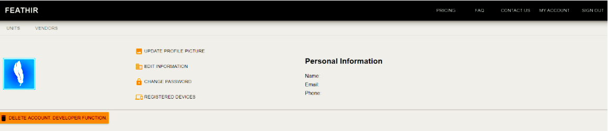
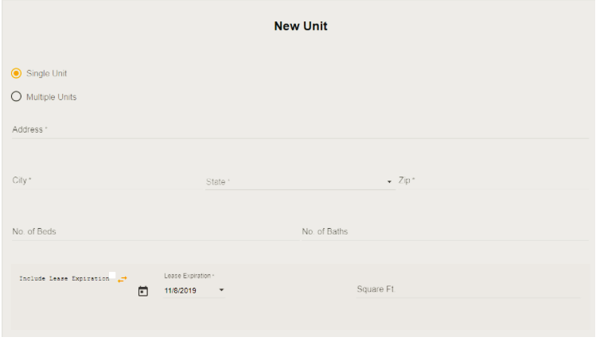
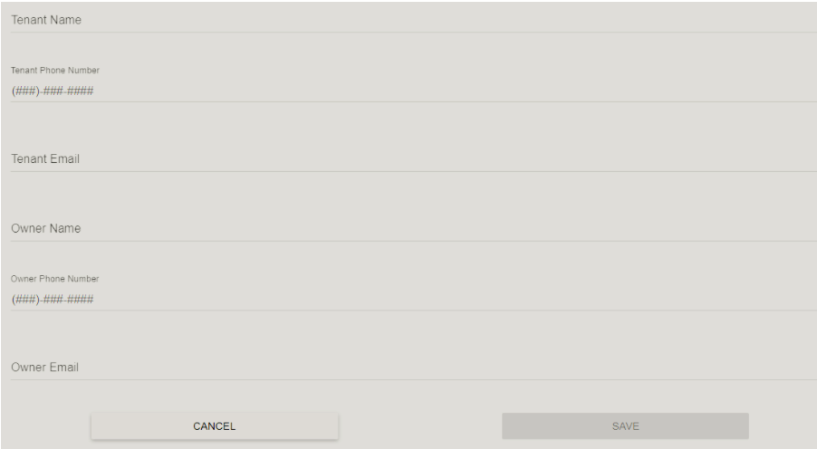
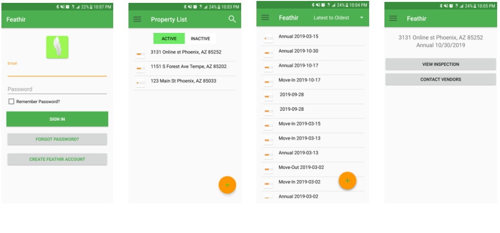

Feathir Property Management
Summary
Feathir Property Management
January 2019 - Decmber 2019
ASU Captone Project
Tempe, AZ
The Feathir Property Management application is a tool that was created to help property owners manage their properties. The application is divided into two parts. There is a web application where users can view and manage their properties. There is also a mobile application where property managers can create inspections and send inspections to the vendors. This application is filling in a gap in the real estate market to help manage and maintain inspection records.
Whenever a tenant moves in or out, the property manager has to go through a list of items and verify the items in the property. If any of the items are damaged or need work they write it down on a piece of paper, take a picture, and then email a vendor to come to the property and fix it. Then the property manager has to scan the inspection list and archive the inspection in a local computer. They also have to keep track of which property the inspection paperwork took place at. The Feathir app was created to help make this process easier and more efficient.
By using the Feathir app, the property manager is able to keep track of what properties he manages. If they have to do an inspection for a new or old tenant, all they need to take is their phone. With the mobile app all they have to do is click on the property that they are at, and then create an inspection. The inspection on the phone lets you click on the list of items that need to be checked and if any of them need to be fixed you can just take a picture with your phone and include it into the inspection. In the app you can add vendors to the property that work with the property. The property manager can send the email to the vendor immediately as they finish creating the inspection on the app. All of this can be done by the property manager's phone.
Technology
Web Application
Property Manager Profile.
Adding a new property to the list of properties that are already being managed.
Adding a new tenant to the property.
Android Application
Adroid app walk through of how to view inspections done on one of the properties.
